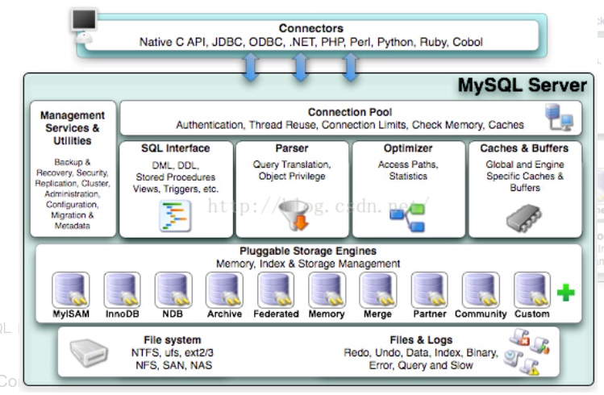

MySQL体系架构
MySQL体系架构

MySQL体系架构分为两部分:
- Connectors
- MySQL server
一是不同语言与SQL的交互，如java-JDBC，PHP，Python。
二是MySQL server。
MySQL server
MySQL server又分八大模块，每个模块负责不同的工作。
1.Management Services & Utilities
系统管理和控制工具：管理（克隆，复制，比较，差异，导出，导入），重建（设置，配置，自动从属促销），一般（磁盘使用，冗余索引，搜索元数据）
2.Connection Pool
连接池：连接池是维护的数据库连接的缓存，以便在将来对数据库的请求需要时可以重用连接。如身份认证、线程重用、连接限制、检查内存、数据缓存；管理用户的连接，线程处理等需要缓存的需求。
3.SQL Interface
SQL接口：进行 DML、DDL，存储过程、视图、触发器等操作和管理；用户通过 SQL 命令来查询所需结果。
4.Parser
解析器：查询翻译对象的特权；SQL 命令传递到解析器的时候会被解析器验证和解析。
5.Optimizer
查询优化器
6.Caches & Buffers
缓存
7.Engine
存储引擎：以何种方式在磁盘上保存数据
MyISAM和Innodb的差别
- MyISAM表的索引与数据文件分离，索引文件存储的是数据记录的地址，而Innodb表数据文件本身就是按B+Tree组织的索引结构，其叶节点data数据域保存了完整的数据记录
- MyISAM表无法处理事务，InooDB可以
- MyISAM存储引擎在筛选大量数据时非常迅速
- MyISAM的并发插入特性允许同时选择和插入数据
- MyISAM存储引擎很适合管理邮件或Web服务器日志数据
- InnoDB存储引擎特别适合处理多重并发的更新请求
- InnoDB表能够自动从灾难中恢复
- InnoDB支持外键的存储引擎只有InnoDB
- InnoDB支持自动增加列AUTO_INCREMENT属性
索引
索引是一种特殊的文件，它们包含着对数据表里所有记录（已添加索引的列）的引用指针。通俗的说，数据库索引好比是一本书前面的目录，页码已经排好序，我们查找某个章节会有对应的页码，查找到了该页码，就查找到了对应的章节，查找页码更快更高效。
Innodb为什么要使用B+Tree索引结构？
B+Tree相比B-tree在每个叶子节点添加了指向旁边叶子节点的next指针。在存取上更快。
- 数据库文件很大，不可能都保存在主存中，所以数据最终还是保存在磁盘上。
- 读取磁盘中的数据就会产生I/O，为了提高读取效率，要尽量减少磁盘I/O。
- 磁盘局部性原理与磁盘预读：由于磁盘的构造，比如机械硬盘，磁头在盘片上滑动来顺序读取数据，当磁盘读取某个数据时，往往不是按需读取，每次都会预读，会顺序向后读取一定的数据放入内存。而预读的长度一般为页（page）的整数倍。
- B-Tree单个节点的大小刚好设计为一个页的大小。所以B-Tree每进行一次索引查找就只会产生一个磁盘I/O，不会因为查找单个节点产生过多的I/O。
页是计算机管理存储器的逻辑块，硬件及操作系统往往将主存和磁盘存储区分割为连续的大小相等的块，每个存储块称为一页（在许多操作系统中，页得大小通常为4k）
转载请注明来源，欢迎对文章中的引用来源进行考证，欢迎指出任何有错误或不够清晰的表达。可以在下面评论区评论，也可以邮件至 876208453@qq.com
文章标题:MySQL体系架构
本文作者:Cai Jun
发布时间:2019-01-27, 12:06:09
最后更新:2019-02-24, 11:04:41
原始链接:http://johncaijun.github.io/2019-01-28-MySQL体系架构/版权声明: "署名-非商用-相同方式共享 4.0" 转载请保留原文链接及作者。